使用 Kibana 和 Rsyslog 监控 Linux 日志
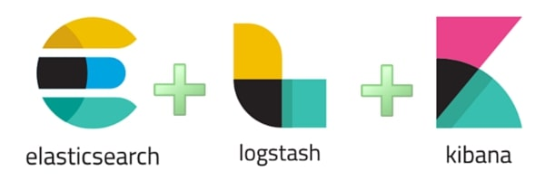
如果你是一名系统管理员，或者是一名好奇的软件开发工程师，那么你很有可能在平常挖掘日志信息的时候找到一些很有价值的信息。
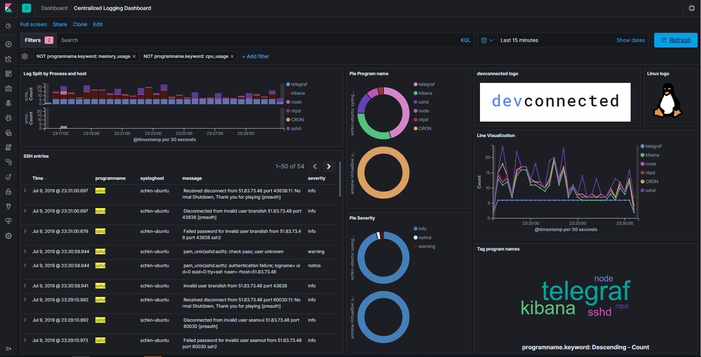
有时你或许想监控虚拟机的 SSH 指令。
有时你或许想查看下你的应用程序服务器在某一天某一个特定的时间出现了什么样的错误信息。
或者你为了想一探究竟到底是谁停了你的一个虚拟机的 systemd 服务。
如果你想从这几个地方了解的话，或许你来对地方了。
在这篇文章当中，我们将会构建一个完整的日志监控流水线，使用 ELK 堆栈（ElasticSearch、Logstash、和 Kibana）和 Rsyslog 作为一个强力的系统日志服务器。
在开始动手之前，让我们先快速的考虑下技术因素，让我们讨论下为什么我们使用 Kibana 监控 Linux 日志。
Ⅰ-为什么你需要监控 Linux 日志？
监控 Linux 日志是非常关键的，而且每一名 DevOps 工程师都需要知道怎样做。理由如下:
你可以通过日志得到实时可视化的反馈: 这或许是众多日志监控理由中最关键的一个，你可以构建一些有意义的可视化视图（例如表格，饼状图，图表或者柱状图）来为你的日志赋予一些意义。
你可以汇总这些信息来构建高级以及复杂的仪表盘: 有时一个原始数据是不够的，你或许想加上一些其他的日志或者将它们与其他日志比较从而了解一个整体的变化趋势。一个具有表达式处理功能的可视化平台可以让你这样操作这些信息。
你可以快速过滤一个特定的术语或者是一个给定的时间段: 如果你只对 SSH 日志感兴趣，你可以为其构建一个指定的仪表盘。
以一种快捷和优雅的方式，日志是可导航的: 我知道从日志文件中无止尽的日志信息中抓取信息的痛苦。我宁愿有一个平台来专门做这件事。
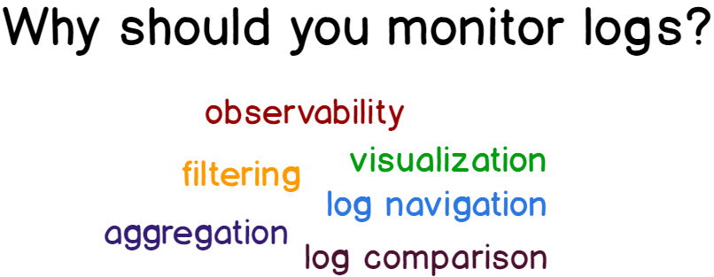
Ⅱ- 你将会学习到什么
这篇入门文章你将会学习到下面的一些知识:
日志在 Linux 系统是如何处理的（Ubuntu 或 Debian）以及什么是 rsyslog。
怎样安装 ELK 堆栈（*ElasticSearch 7.2，LogStash 和 Kibana*）以及这些工具是用来做什么的。
怎样配置 rsyslog 从而将日志转发到 Logstash。
怎样配置 Logstash 从而获取日志以及 ElasticSearch 存储。
怎样使用 Kibana 来构建我们最终的可视化仪表盘。
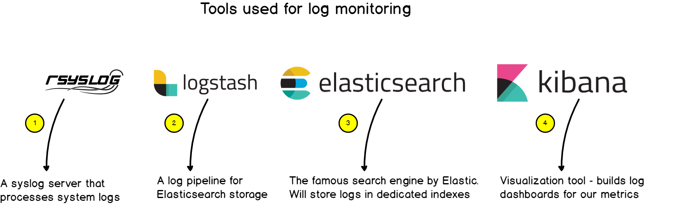
这篇入门文章的准备工作如下:
有一个安装了 rsyslog 的 Linux 系统。可以有一个带有 rsyslog 的独立计算机或者是一个集中式日志处理系统。
有管理员权限或者是有足够的权限在你的 Linux 系统上安装新的安装包。
没有其他可以说明的了，让我们开搞！
Ⅲ-一个日志监控系统的架构看起来长什么样子？
a-Linux 日志的关键概念
在描述我们的日志监控系统架构的样貌细节之前，让我们再稍微回顾一下。
回溯历史，Linux 日志始于 syslog。
Syslog 是 1980 年开发的一个协议主要目的是标准化日志信息的格式，不仅适用于 Linux，对于任何日志交换系统同样适用。
从这之后，syslog 服务器开发了出来，并带有 syslog 消息的处理功能。
它们快速衍生出一些功能比如过滤，有内容路由能力，以及或许是这些服务器最关键的特性: 存储日志并对其进行轮换。
Rsyslog 的开发保持了这些关键的功能: 拥有一个模块以及一个可定制化的方式来处理这些日志。
模块化的方式可以以模块的形式处理日志信息以及定制化日志模板。
在某种程度上，rsyslog 可以从许多不同的源接收日志，并且将它们转发到更多种类的目标位置。这也就是我们为什么在这篇文章中使用它的原因。
b-构建一个日志监控架构
我们这篇文章最终使用的架构如下:
rsyslog: 作为高级的 syslog 服务器，rsyslog 将日志使用我们先前提到的 RFC 5424 的格式转发到 Logstash 上。
Logstash: 作为 ELK 堆栈的一部分，Logstash 会将日志由 syslog 格式转换为 JSON。提醒一下，ElasticSearch 使用 JSON 作为输入。
ElasticSearch: 著名的搜索引擎会将日志存储在一个专用的日志索引（logstash-*）中。ElasticSearch 索引这些日志然后令其可用于分析当中。
Kibana: 作为一个可探测的以及可视化的平台，Kibana 将会存放我们最终显示的仪表盘。
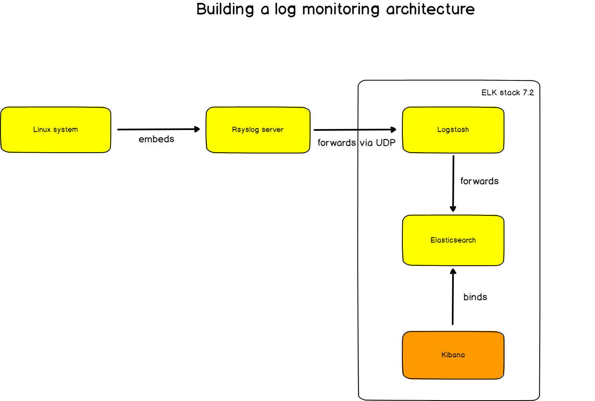
现在我们知道了我们需要努力的方向了，让我们安装这些需要用到的工具吧。
Ⅳ-安装各种工具
a-在 Ubuntu 上安装 Java
在安装 ELK 堆栈之前，你需要在你的机器上安装 Java。
运行下面的命令以进行安装:
$ sudo apt-get install default-jre
这篇文章中，该实例运行的是 OpenJDK version 11。
ubuntu:~$ java -version
openjdk version "11.0.3" 2019-04-16
OpenJDK Runtime Environment (build 11.0.3+7-Ubuntu-1ubuntu218.04.1)
OpenJDK 64-Bit Server VM (build 11.0.3+7-Ubuntu-1ubuntu218.04.1, mixed mode, sharing)
b-添加 Elastic 安装包到你的实例
这篇文章，我将会使用 Ubuntu，但也会为 Debian 提供详细信息。
首先，添加 GPG key 到你的 APT 仓库。
$ wget -qO - https://artifacts.elastic.co/GPG-KEY-elasticsearch | sudo apt-key add -
然后，你可以添加 Elastic 源到你的 APT source list 文件中。
$ echo "deb https://artifacts.elastic.co/packages/7.x/apt stable main" | sudo tee -a /etc/apt/sources.list.d/elastic-7.x.list
$ cat /etc/apt/sources.list.d/elastic-7.x.list
deb https://artifacts.elastic.co/packages/7.x/apt stable main
$ sudo apt-get update
到这里，你已经可以准备安装 ELK 堆栈下的所有工具了。
让我们从 ElasticSearch 开始吧。
c-安装 ElasticSearch
ElasticSearch 是一款基于 Elastic 开发的搜索引擎，该搜索引擎会以索引的方式存储数据以便快速检索。
通过下面的命令安装它:
$ sudo apt-get install elasticsearch
该命令会自动执行如下操作:
下载 ElasticSearch deb 安装包；
创建一个 elasticsearch 用户；
创建一个 elasticsearch 用户组；
自动创建一个配置好的 systemd 服务（默认为 inactive）
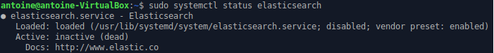
一开始，服务是 inactive 的，运行它并且确保所有运行正常。
$ sudo systemctl start elasticsearch
● elasticsearch.service - Elasticsearch
Loaded: loaded (/usr/lib/systemd/system/elasticsearch.service; disabled; vendor preset: enabled)
Active: active (running) since Mon 2019-07-08 18:19:45 UTC; 2 days ago
Docs: http://www.elastic.co
为了验证 ElasticSearch 是实际运行的，你可以运行下面两个命令中的任何一个进行验证:
$ sudo lsof -i -P -n | grep LISTEN | grep 9200
java 10667 elasticsearch 212u IPv6 1159208890 0t0 TCP [::1]:9200 (LISTEN)
java 10667 elasticsearch 213u IPv6 1159208891 0t0 TCP 127.0.0.1:9200 (LISTEN)
- 执行一个简单的 ElasticSearch 查询
$ curl -XGET 'http://localhost:9200/_all/_search?q=*&pretty'
你的 ElasticSearch 实例就都设置好啦！
然后，让我们安装 Logstash 作为日志采集和过滤工具吧。
d-安装 Logstash
如果你之前添加了 Elastic 安装源了，安装 Logstash 就只需要执行下面的命令就可以了:
$ sudo apt-get install logstash
同样，Logstash 服务将会被创建出来，你需要启动它。
$ sudo systemctl status logstash
$ sudo systemctl start logstash
默认情况下，Logstash 在 9600 端口上监听所有的指标项。如我们之前所做的那样，列出你的机器上所有开放的端口然后查看其中的指定端口。
$ sudo lsof -i -P -n | grep LISTEN | grep 9600
java 28872 logstash 79u IPv6 1160098941 0t0 TCP 127.0.0.1:9600 (LISTEN)
棒极了！
我们只需要安装 Kibana 就可以完成整个的安装工作了。
e-安装 Kibana
提醒下，Kibana 是为 ElasticSearch 量身定制的可视化工具被用来监控我们最终的日志信息。
没有惊喜，下面是安装 Kibana 的命令:
$ sudo apt-get install kibana
依旧需要启动服务验证是否正确运行。
$ sudo systemctl start kibana
$ sudo lsof -i -P -n | grep LISTEN | grep 5601
node 7253 kibana 18u IPv4 1159451844 0t0 TCP *:5601 (LISTEN)
Kibana Web UI 在 5601 端口可访问。
在你的浏览器中访问 http://localhost:5601 你应该会看到下面屏幕所示的界面。
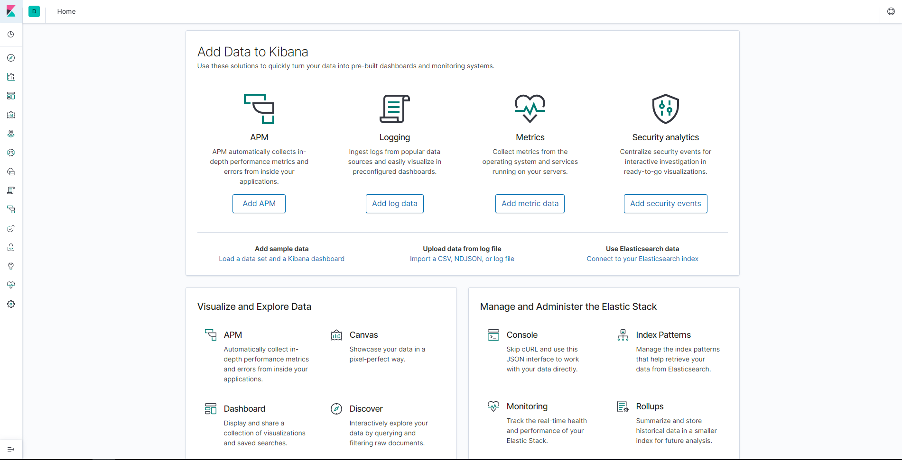
现在我们已经准备好从 rsyslog 接收日志然后将它们在 Kibana 上展示出来了。
Ⅴ-转发 Linux 日志至 ElasticSearch
提醒下，我们将日志从 rsyslog 转发至 Logstash，然后这些日志将会被自动的发送到 ElasticSearch。
a-从 Logstash 转发到 ElasticSearch
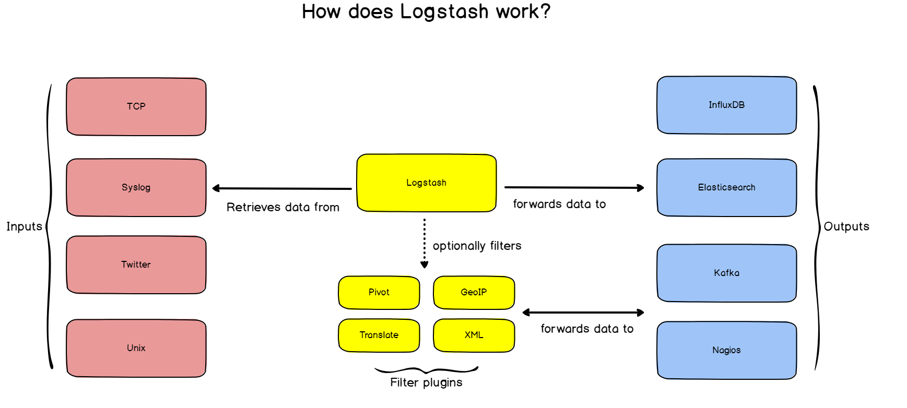
在日志从 rsyslog 转发到 Logstash 之前，设置 Logstash 与 ElasticSearch 之间的日志转发是非常重要的。
为此，我们将会创建一个 Logstash 的配置文件告诉它做哪些事情。
转到 /etc/logstash/conf.d 目录创建一个 logstash.conf 的文件。
文件内容是这样的:
input {
udp {
host => "127.0.0.1"
port => 10514
codec => "json"
type => "rsyslog"
}
}
# The Filter pipeline stays empty here, no formatting is done. filter { }
# Every single log will be forwarded to ElasticSearch. If you are using another port, you should specify it here.
output {
if [type] == "rsyslog" {
elasticsearch {
hosts => [ "127.0.0.1:9200" ]
}
}
}
注: 这篇文章中，我们为 Logstash 使用 UDP 输入，但是如果你想寻找一个更可靠的传输日志的方式，你或许会使用 TCP 输入。格式基本上是一样的，只是将 UDP 那一行改为 TCP。
重启 Logstash 服务。
$ sudo systemctl restart logstash
运行下面的命令以验证所有运行正常:
$ netstat -na | grep 10514
udp 0 0 127.0.0.1:10514 0.0.0.0:*
太棒啦！
Logstash 现在在 10504 端口上监听了。
b-从 rsyslog 转发至 Logstash
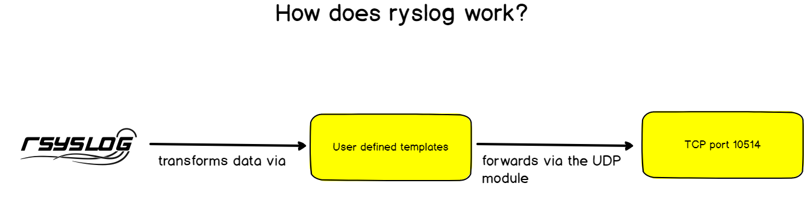
同之前内容描述的那样，rsyslog 有许多不同的模块允许将接收到的日志传到各种各样的目标位置。
Rsyslog 有使用模板转换日志的能力。这就是我们寻找的东西，因为 ElasticSearch 希望以 JSON 作为输入而不是 syslog RFC 5424 字符串。
为了让 rsyslog 转发日志，找到 /etc/rsyslog.d 目录创建一个名为 70-output.conf 的新文件。
文件中写如下内容:
# This line sends all lines to defined IP address at port 10514
# using the json-template format.
*.* @127.0.0.1:10514;json-template
现在你有了日志转发功能了，在同级目录下创建一个 01-json-template.conf 的文件，然后粘贴下面的内容到文件中:
template(name="json-template"
type="list") {
constant(value="{")
constant(value="\"@timestamp\":\"") property(name="timereported" dateFormat="rfc3339")
constant(value="\",\"@version\":\"1")
constant(value="\",\"message\":\"") property(name="msg" format="json")
constant(value="\",\"sysloghost\":\"") property(name="hostname")
constant(value="\",\"severity\":\"") property(name="syslogseverity-text")
constant(value="\",\"facility\":\"") property(name="syslogfacility-text")
constant(value="\",\"programname\":\"") property(name="programname")
constant(value="\",\"procid\":\"") property(name="procid")
constant(value="\"}\n")
}
你或许猜到了，对于每一个输入的信息，rsyslog 会将日志参数插入到 JSON 格式的消息中，然后转发到在 10514 端口上监听的 Logstash。
重启 rsyslog 服务，然后验证日志可以正确的转发到 ElasticSearch。
注: 日志将会被转发到一个名为 logstash-* 的索引中。
$ sudo systemctl restart rsyslog
$ curl -XGET 'http://localhost:9200/logstash-*/_search?q=*&pretty'
{
"took": 2,
"timed_out": false,
"_shards": {
"total": 1,
"successful": 1,
"skipped": 0,
"failed": 0
},
"hits": {
"total": {
"value": 10000,
"relation": "gte"
},
"max_score": 1,
"hits": [
{
"_index": "logstash-2019.07.08-000001",
"_type": "_doc",
"_id": "GEBK1WsBQwXNQFYwP8D_",
"_score": 1,
"_source": {
"host": "127.0.0.1",
"severity": "info",
"programname": "memory_usage",
"facility": "user",
"@timestamp": "2019-07-09T05:52:21.402Z",
"sysloghost": "schkn-ubuntu",
"message": " Dload Upload Total Spent Left Speed",
"@version": "1",
"procid": "16780",
"type": "rsyslog"
}
}
]
}
}
太棒了！现在我们将 rsyslog 的日志存储到了 ElasticSearch 中了。
是时候在 Kibana 上构建我们最终的仪表盘了。
Ⅵ-在 Kibana 构建一个日志仪表盘
这是所有乐趣开始的地方。
我们将会构建第一部分展示的仪表盘然后让收集的数据变得有意义。
类似于我们的这篇文章 Linux 进程监控，这部分根据最终仪表盘中面板的不同分成了不同的部分，所以对哪部分感兴趣就浏览哪一部分吧。
a-简单说下 Kibana
访问 Kibana（http://localhost:5601），你会看到下面的界面。
如果这是你第一次使用 Kibana，这里有一点让我花了一段时间明白的小陷阱想要跟你说一下。
为了创建一个仪表盘，你需要创建可视化面板。Kibana 有两个面板，一个叫 “Visualize” 另一个叫 “Dashboard”。
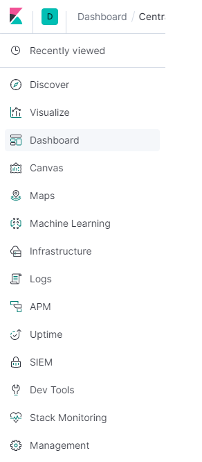
为了创建仪表盘，你首先将会使用 Visualize 面板创建每一个独立的可视化面板并且保存它们。
创建完成后，你需要一个一个地导入到你最终的仪表盘中。
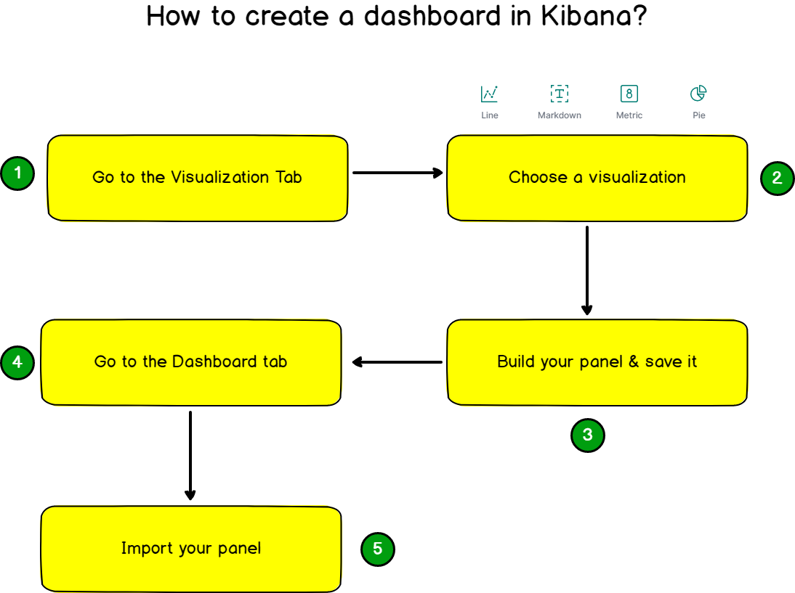
转到 “Visualize” 面板，让我们开始做第一个面板。
b-为进程绘制汇总的条形图
为了创建第一个仪表盘，点击 Kibana 右上角的 “Create new visualization”。选择一个垂直方向的柱状图面板。
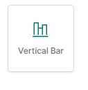
构建的面板最终的效果是这样的:
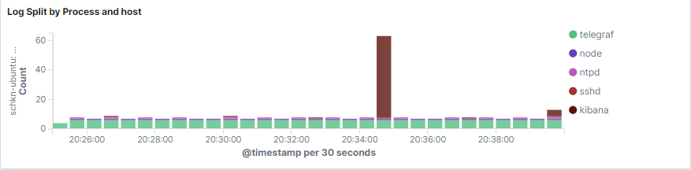
你可以看到，柱状图以一种汇总的方式提供了进程的日志总数。
如果你在多台主机上工作，该柱状图同样可以显示不同主机的日志数。
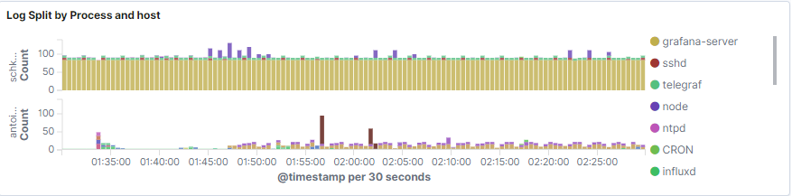
没有其他说明的了，这是这个面板的配置过程清单。
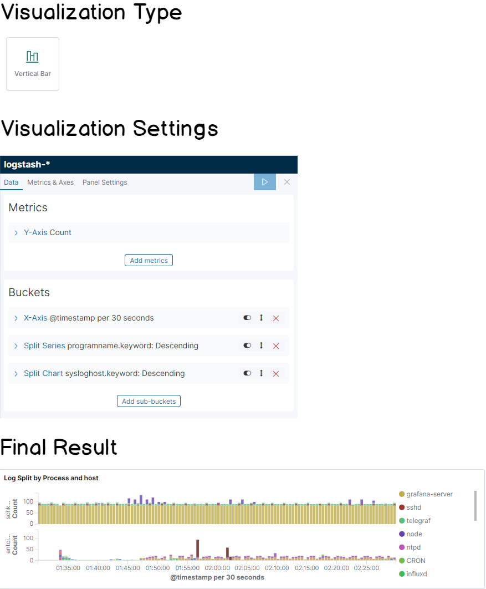
c-按程序名称显示的饼形图
跟之前做的事情很相似，目标是构建一个饼形图按照程序名显示日志的比重。
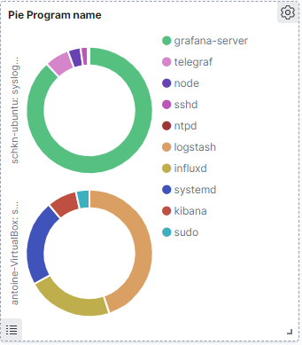
这是这个面板的配置过程清单！
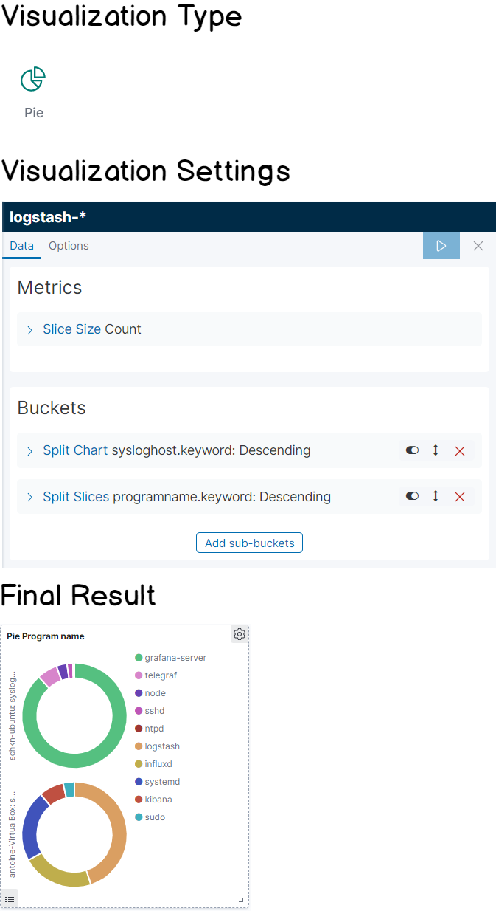
d-按严重程度显示的饼状图
这个面板看起来很像之前创建的，除了它是按日志严重等级显示的。
当你的系统发生了一个特别严重的故障时这个面板会非常有用，并且你希望看到故障发生时面板显示错误数量也会快速增加。
它同样提供了一个简单的方法能让你看到一段时间内日志严重程度的概要，例如你想看看夜间或者特定日期记录的严重等级。

同样你可能在等这个，这是这个面板的配置过程清单！
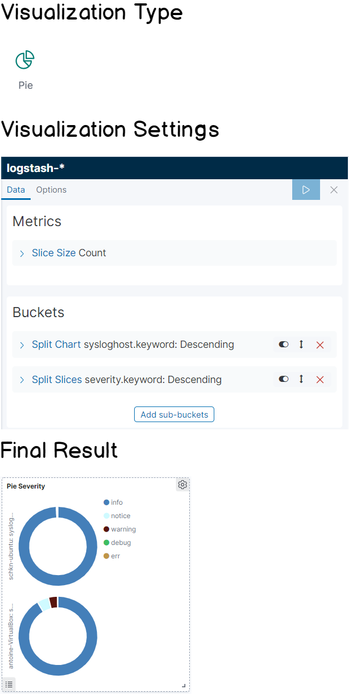
e-监控 SSH 条目
这部分有一点特殊，你需要到 “Discover” 标签栏去构建这个面板。
当进入到这个探索标签栏时，“logstash-*” 默认被自动选中的。
在过滤栏位，输入如下的过滤条件 “programname: ssh*”。
正如你所看到的那样，你有了直接访问在你机器上与 SSHd 服务有关的每一个日志的权限。你可以追踪例如非法访问或者错误登录的记录。
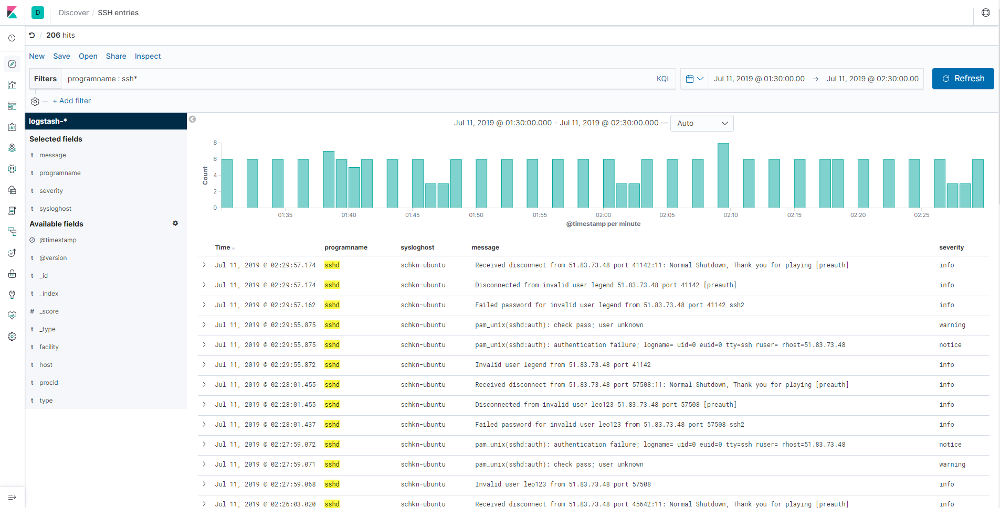
为了能够访问到该仪表盘的面板，点击 “Save” 选项，然后为你的面板起一个名字。
在仪表盘面板处，你可以点击 “Add”，然后选择刚才创建的面板。
干得漂亮！现在你的面板已经从 discover 面板添加到仪表盘中了。
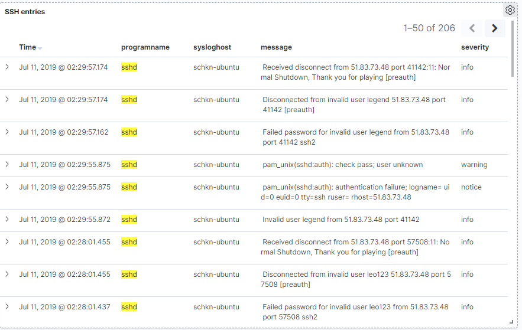
Ⅵ-总结
这篇文章中，你已经很好的理解了怎样轻松的使用 Rsyslog 和 ELK 堆栈监控整个的日志基础设施了。
如该文中所展示的架构那样，你可以通过转发日志到你的中心服务器这种方式为你的日志监控架构扩大为一个完整的集群。
为了能够在日志数量增长较多的情况下扩容主节点（例如使用 Kubernetes）一种建议是为你的 rsyslog 与 ELK 堆栈使用 Docker 镜像。
同样重要的一点是如果你想未来修改监控日志的方式，这个架构是一个理想的选择。
你可以继续依赖 rsyslog 集中日志，但是你也可以换成网关（这个例子中的 Logstash），或者是可视化工具。
重要的一点是使用例如 Grafana 这样的工具监控 ElasticSearch 日志也是很容易的。
通过这篇文章，你会着手使用这个架构应用到你的基础设施中吗？
你会觉得其他的面板跟你在系统中调试故障时息息相关吗？
如果你有其他的想法，请在下方留言，这样可以帮助到其他的工程师。
在那之前，开心如常。